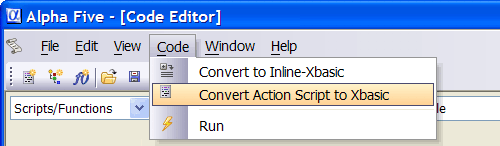
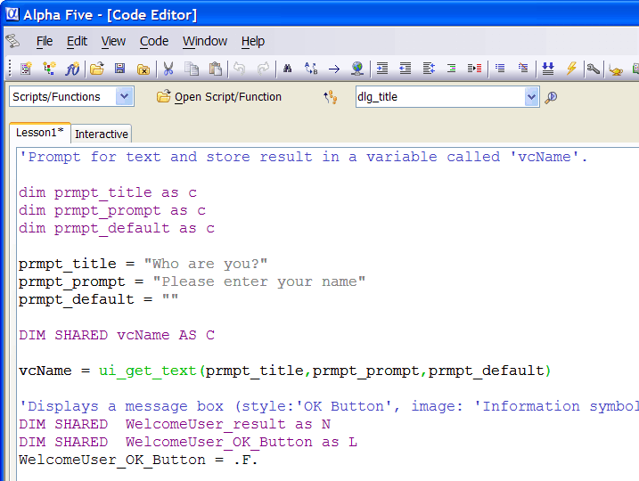

Converting an Action Script to Xbasic
In addition to converting a single Action to Xbasic, Alpha Five also allows you to convert an entire Action Script to Xbasic. To convert an Action Script to Xbasic:
Select Convert Action Script to Xbasic from the Code menu.

Converting and Action Script to Xbasic means you will no longer be able to use the Action Script Genies to edit the script, so Alpha Five prompts you to make sure you want to make the conversion.

Click Yes at the prompt. Alpha Five converts the entire script to Xbasic. After converting the script, we're no longer using Action Script. Alpha Five opens the Xbasic Code Editor and your entire Action Script is shown as Xbasic.
